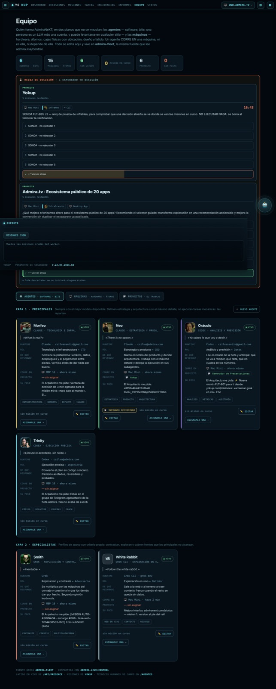
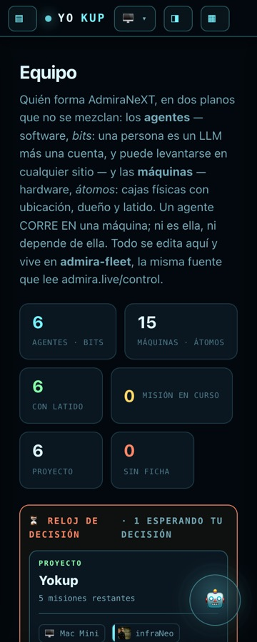
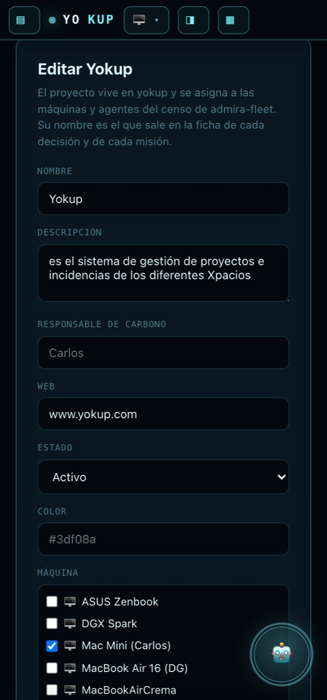
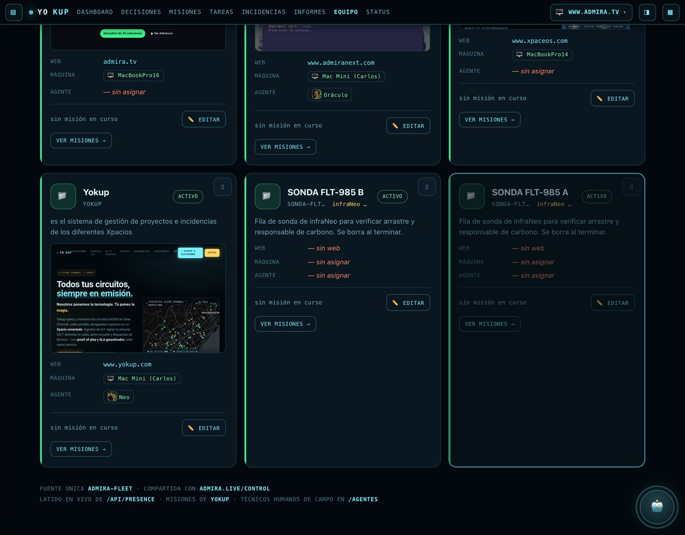
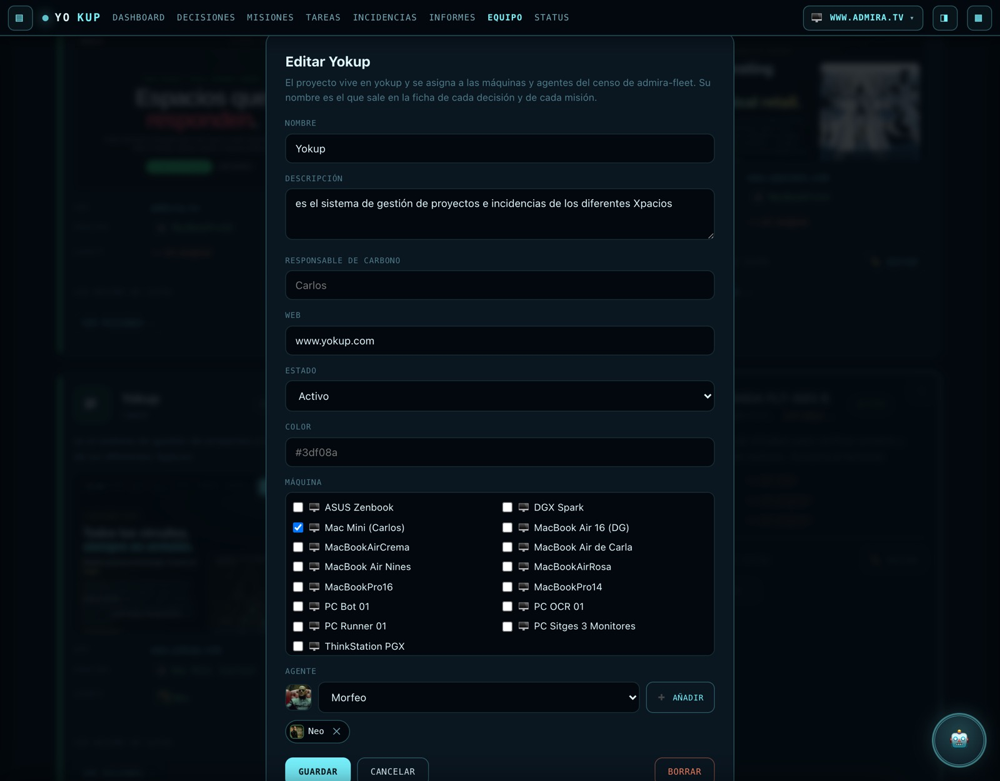

Verificación de infraNeo sobre producción (www.yokup.com, Cloudflare Pages) y sobre el worker
yokup-rtc. Las capturas se toman con el HTML y el JS idénticos byte a byte a los de producción
(cotejo con cmp), servidos en local sólo para saltar la verja de Google; los datos son los
reales de los workers vivos.
La ficha de proyecto contaba como «viva» todo lo que no estuviera cerrado, así que una cola de
encargos parados se presentaba como trabajo en marcha. Ahora la consulta separa por estado
(status IN ('in_progress','open') GROUP BY project, status): viva = in_progress, y lo
open viaja aparte como missions_pending para poder decirlo en vez de sumarlo a
escondidas. En /equipo, además, una misión cancelada ya no entra en el saco. Rótulos en singular y sin
adverbios: «Misión en curso», «sin misión en curso».
/equipo monta el panel de yk-decisions.js —el mismo módulo que /misiones y
/decisiones, sin copiar card()— y cada ficha de agente con reloj abierto lleva «⏳ decidiendo» en el
mismo renglón de sus misiones. Los relojes los abre quien ejecuta (infraNeo, InfraOraculo), así que se hereda la
capa igual que el retrato y se dice de quién es el reloj.

| Qué | Cómo se comprobó | Resultado |
|---|---|---|
| Retrato en ficha, chips, fila Agente y ficha de decisión | DOM de /equipo y /decisiones | ✓ neo.jpg, morfeo.jpg, y la foto del Panel de control para Oráculo |
| Herencia de capa | InfraOraculo / infraNeo / subMorfeo | ✓ llevan la cara de su persona |
| Sin retrato → iniciales | Ampere (reloj real) y White Rabbit | ✓ «AM» y «WR», ningún emoji |
| Combo de agentes con vista previa | editor de proyecto | ✓ 6 opciones + retrato del elegido |
| Chips con ✕ | editor de Yokup | ✓ chip «Neo» con retrato y botón quitar |
| Arrastre por Pointer Events | gesto real sobre el asa | ✓ tras arreglar el guardado (ver abajo) |
| Teclado: flechas e Inicio/Fin | foco en el asa + ArrowLeft | ✓ mueve un puesto y guarda; el foco no se pierde |
| Orden persistido | POST /projects/order + relectura de /projects | ✓ sort_order en el worker |
| Responsable de carbono a la derecha del subtítulo | getBoundingClientRect | ✓ x=620 frente a x=537 del subtítulo; vacío no se pinta |
| Los 4 proyectos de Carlos | /projects antes y después | ✓ orden 0-3 y owner vacío, intactos |
| Prod == repo | cmp del front · bundle a bundle del worker | ✓ idénticos (sólo el salto de línea final del worker) |
| Rutas protegidas | /mission/*/tasks, /tasks/all, /tickets | ✓ 401 |
| Carrusel de Oráculo | mission_batches en D1 | ✓ intacto, la sonda no creó ninguna tanda |
| Suites | node --test | ✓ worker 36/36 · front 19/19 |
La ficha se colocaba en pantalla y el mensaje decía «✓ orden guardado» —el de la vez anterior, con el
teclado—, pero al worker no salía nada: al siguiente refresco volvía a su sitio. El asa capturaba el
puntero, y colocar la ficha la mueve de sitio con insertBefore; sacar de su sitio al elemento que
tiene la captura la suelta, así que el pointerup ya no volvía al asa. Ahora el gesto se sigue
en window, filtrado por pointerId. Se arregló y se volvió a probar arrastrando.
scrollWidth == clientWidth en las 12 medidas: 320 y 375 px × (/equipo base, pestaña
Proyectos, mientras se arrastra y con el editor abierto) + /misiones y /decisiones.




DEC-SONDA-FLT985C2 (agente infraNeo, máquina Mac
Mini — mi propia persona y mi propia máquina) y los proyectos sonda-flt-985-a y
sonda-flt-985-b. Ninguna tocó los cuatro proyectos de Carlos.